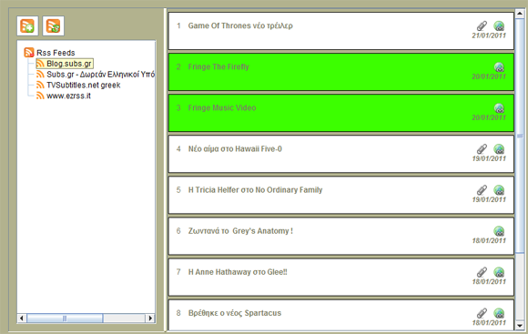
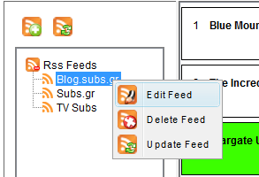

| The Feeds Panel |
|---|
|

|
|
The Feeds panel display user imported feeds. To Import a feed click on the
Add Feed button and type the feed's url in the text box. All feeds are displayed in the left tree where you can select which feed to show in the right panel. Right clicking on a feed title brings up the feeds popup menu with the options to edit, delete or refresh a feed.

In the right panel the selected feeds are displayed. You can choose the number of feed
columns in the [Internet Options].The feeds that are related with the series you watch are displayed in green (This may be overriden by some Look And Feels). By Clicking on the feed's title the feed will expand 
|